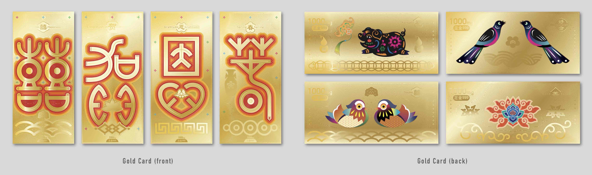
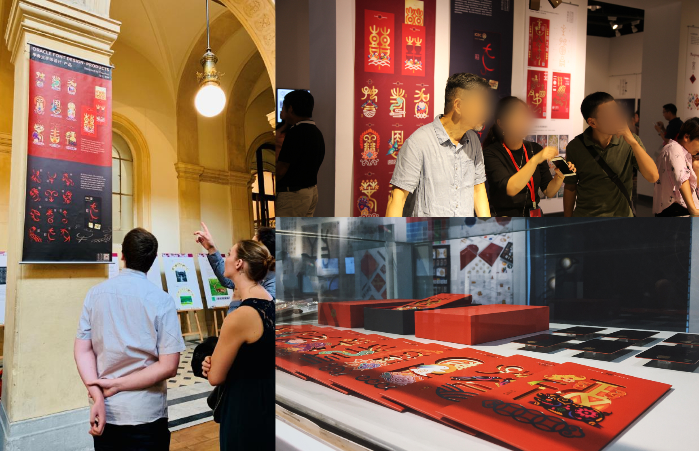
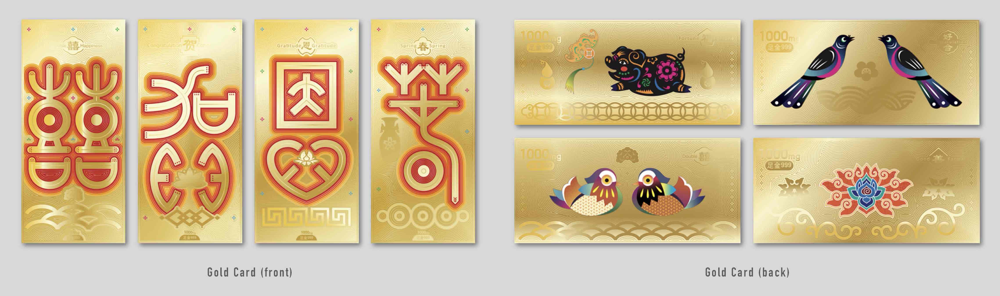
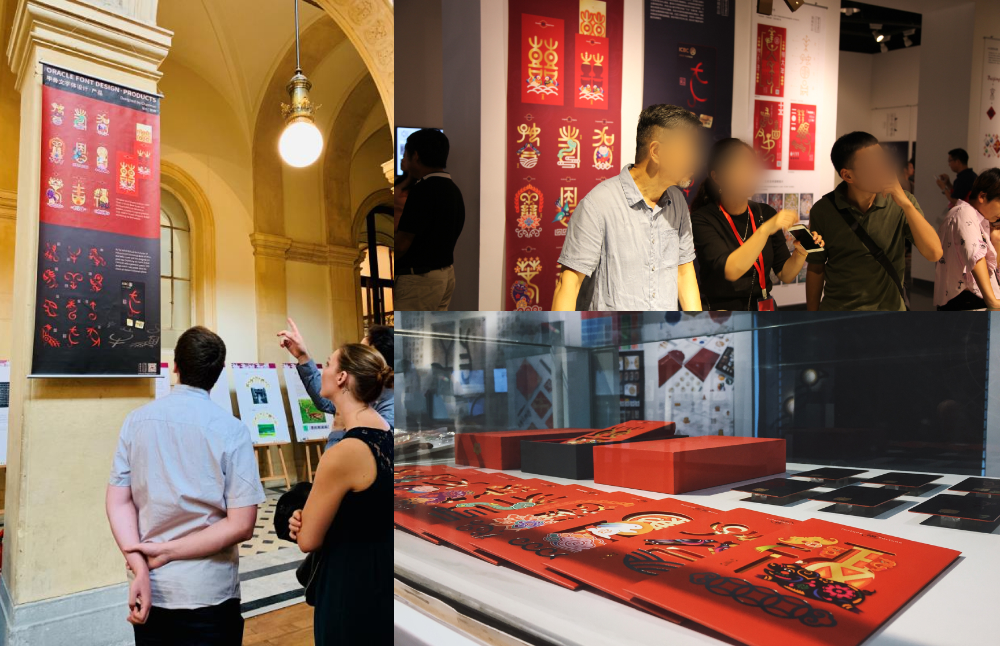

A Contemporary Reinterpretation of Oracle Bone Script in Festive Design
Bone Script Red Packet is a series of ten hollow-cut red envelopes inspired by the ancient Chinese oracle bone script, designed under the mentorship of Professor Nan Chen. Each envelope features a distinct theme—fortune, longevity, auspiciousness, double happiness, congratulations, spring, gratitude, good karma, good match, and reunion—represented in stylized oracle bone characters. The design combines cut-out silhouettes with gold inner cards, creating a striking three-dimensional visual effect that bridges historical calligraphy and contemporary festive culture.
This project explores how traditional scripts can be revitalized through modern material and visual expression, emphasizing cultural continuity and innovation in everyday design objects.
 


